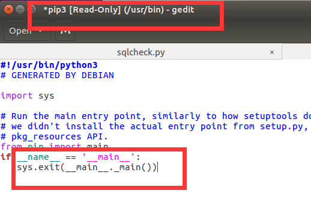

0x01 Ubuntu_LAMP搭建
ubuntuLAMP搭建参照成敏学长博客：https://mochazz.github.io/2017/07/13/LAMP/
LAMP命令备忘录：
- 更新源：
apt-get update - 安装装apche2：
apt-get install apache2 -y - 安装mysql:
apt-get install mysql_server -y - 安装php5.6:(注意这里就不要执行apt-get install php,会造成麻烦)安装扩展插件：
1
2
3
4
5
6
7apt-get install -y language-pack-en-base
LC_ALL=en_US.UTF-8 add-apt-repository ppa:ondrej/php
add-apt-repository ppa:ondrej/php
apt-get update
apt-cache search php5
apt-get install php5.6-common -y
apt-get install libapache2-mod-php5.6 -y1
apt-get install php5.6 php5.6-cgi php5.6-cli php5.6-phpdbg php5.6-fpm php5.6-dev php5.6-common php5.6-curl php5.6-gd php5.6-imap php5.6-intl php5.6-ldap php5.6-mysql php5.6-pspell php5.6-recode php5.6-snmp php5.6-sqlite3 php5.6-sybase php5.6-tidy php5.6-opcache php5.6-json php5.6-bz2 php5.6-mcrypt php5.6-odbc php5.6-readline php5.6-interbase php5.6-xmlrpc php5.6-enchant php5.6-gmp php5.6-xsl php5.6-bcmath php5.6-mbstring php5.6-soap php5.6-xml php5.6-dba
- 赋予
/var/www/html 777权限:chmod 777 /html - 拖入sqlilabs与/var/www/html中
0x02 ubuntu网速优化
- 解决网速问题：
sudo gedit /etc/modprobe.d/iwlwifi.conf
文件下写入保存：options iwlwifi 11n_disable=1 - 切换跟新源，选择国内
在setting system中打开（可解决apt-get update 更新出错）
0x03 ubuntu——python环境搭建:
- python3 环境切换
alias python='/usr/bin/python3.4(根据需要更换)' - pip 安装
sudo apt-get install python3-pip
//卸载命令：sudo apt-get remove python3-pip - pip3 install 提示 no mudle
修改文件main函数
